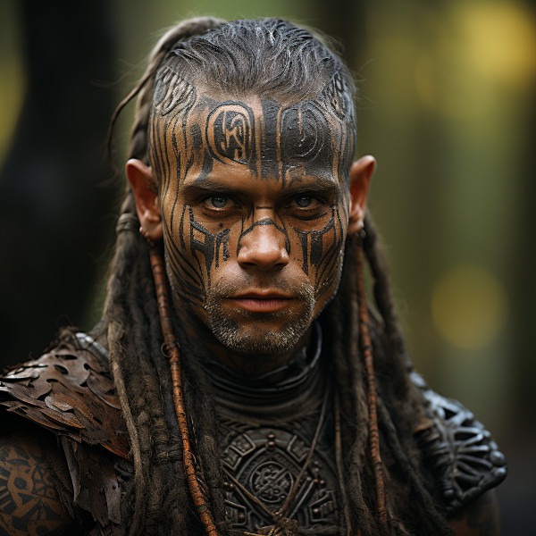

Figure 1: Chieftan Verenar Darkthorn
Verenar Darkthorn was born into Hord Caelithra and displayed leadership qualities from an early age. As he grew, his ambition and desire for success became evident to those around him. When the previous chieftain stepped down, Verenar was chosen to lead Hord Caelithra due to his charisma and determination.
Under his leadership, Hord Caelithra has become a thriving and influential force within the Vulwin Horde. Verenar’s adaptability and eloquence have allowed the tribe to establish beneficial alliances and trade agreements with neighboring hordes, contributing to their prosperity.
Despite his competitive nature, Verenar values the well-being of his tribe and strives to maintain a harmonious balance between ambition and the welfare of his people. As Chieftain, he continues to set high standards for Hord Caelithra, ensuring that they achieve success and recognition in the challenging landscape of Naurrnen.